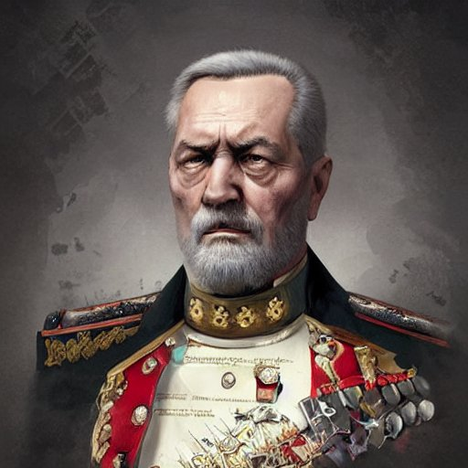

Você escolheu apoiar o Lord Grey

Robin Hood se juntou a Lord Grey em sua busca por uma reforma econômica. No entanto, o plano de Lord Grey era apenas um disfarce para ganhar ainda mais poder e controle. Ele rapidamente se torna um ditador cruel que explora os cidadãos e os mantém em estado de pobreza e submissão.